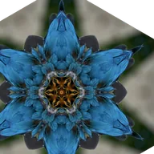

Caleidoscópio

Fatias espelhadas ao redor de um ponto.
O Caleidoscópio repete uma fatia da imagem em círculo ao redor de um ponto. Segmentos é o número de fatias, Ângulo gira o padrão e Centro é o meio. Anime o Ângulo para um padrão giratório.
Configurações
| Configuração | Tipo | Intervalo | Padrão |
|---|---|---|---|
| Centro | Ponto (X, Y) | -1 a 2 | 0.5, 0.5 |
| Segmentos | Número | 1 a 64 | 6 |
| Ângulo | Ângulo | -360° a 360° | 0° |
| Espelhar | Ativado ou desativado | – | Ativado |